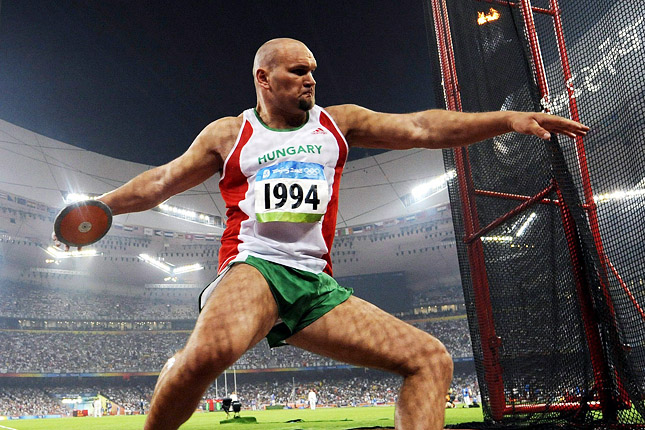

Néhány szó az atlétikáról
Az atlétika a természetes mozgásformákat, a járást, a futást, az ugrást és a dobást foglalja magában. E mozgások rendszeres gyakorlása hozzájárul az egészség megőrzéséhez, tökéletesíti az ember alapvető mozgáskészségét, fejleszti fizikai képességeit, és elősegíti az értelmi, erkölcsi és akarati tulajdonságok helyes kialakítását, alapja az iskolai testnevelésnek.
Az atlétika futó, gyalogló, ugró és dobó vagy lökő sportágak összefoglaló elnevezése. Az atlétikai versenyek általában látványosak, a kidolgozott mozgásformák esztétikusak, a különböző korú versenyzők egymás elleni küzdelmei és az elért eredmények hitelesek, a győzelem a versenyzés tiszta örömét jelenti.
Ugrószámok
- Magasugrás
- Távolugrás
- Rúdugrás
- Hármasugrás
Távolugrás
A távolugrás az atlétika technikailag egyik legnehezebb versenyszáma, ahol az ugró célja a lehető legnagyobb távolság ugrása egy lábról. Az optimális légmunka mellett a nekifutás sebessége kiemelten fontos, ezért aztán nem meglepő, hogy a távolugrók körében kiváló sprinterek is vannak.
Az ötkarikás játékokon az egyik legnehezebb számnak tartották, olyan sokféle képességet igényel.

Magasugrás
A magasugrás az atlétika egyik versenyszáma, olyan intenzíven technikai sport, ahol az ugró egy helyen kombinálja vele született fizikai tehetségét, gyorsaságát, lábmunkáját és azt a tökélyre fejlesztett képességét, hogy testét kontrollálja a levegőben.
Dobószámok
- Gerelyhajítás
- Kalapácsvetés
- Diszkoszvetés
- Súlylökés
Gerelyhajítás
Az atlétikai dobószámok közül a gerelyhajítás az ókori olimpiai játékok legmilitaristább programpontja volt, i.e. 708-tól az ötpróba részeként szerepelt. A megfeszített testű atléta, aki elhajítja a fémvégű rudat az erő, energia, pontosság és időzítés legnagyobb ura.
Büszkeségünk
Kalapácsvetés
A kalapácsvetés az atlétikai dobószámok egyik legrégebbi versenyszáma, ahol a versenyzők egy vasgolyót felgyorsítanak, majd elhajítanak egy 2,135 méter átmérőjű körből. A kalapács egy, a végén fogóval ellátott lánchoz van rögzítve.
A gyökerekhez kivételesen nem az ókori görögökig kell visszanyúlnunk, hanem az írekig, skótokig.

Diszkoszvetés
Kirobbanó erő, gyorsaság, egyensúly, mindez jellemző a diszkoszvetésre, amely már az ókori ötkarikás játékokon is az ötpróba szerves része volt.
A diszkoszverseny már Homérosz Iliászában is feltűnik, de az ókori szobrász, Müron alkotása konzerválta számunkra öröklétre a diszkoszvető atléta képét. Az antik görög szobrászat tobzódott az atlétikai gyakorlatok és olimpiai versenyek ábrázolásában. A Diszkoszvető merészen elcsavart atlétatestén pedig szinte látszik az egész műveletsor lendülete, eleganciája.
Súlylökés
A súlylökés az atlétikai program hagyományos dobószáma, amely az erő, a sebesség és az egyensúly különleges kombinációját alkotja.
Homérosz Trója ostrománál már említést tesz kőhajigáló katonákról, ám az ókori görög versenyeken nem találjuk történelmi nyomait. Sport gyanánt sziklákat dobáltak a hellének. A mai súlylökéshez hasonló legkorábbi események a középkorra tehetők, amikor katonák ágyúgolyókat hajítottak el.